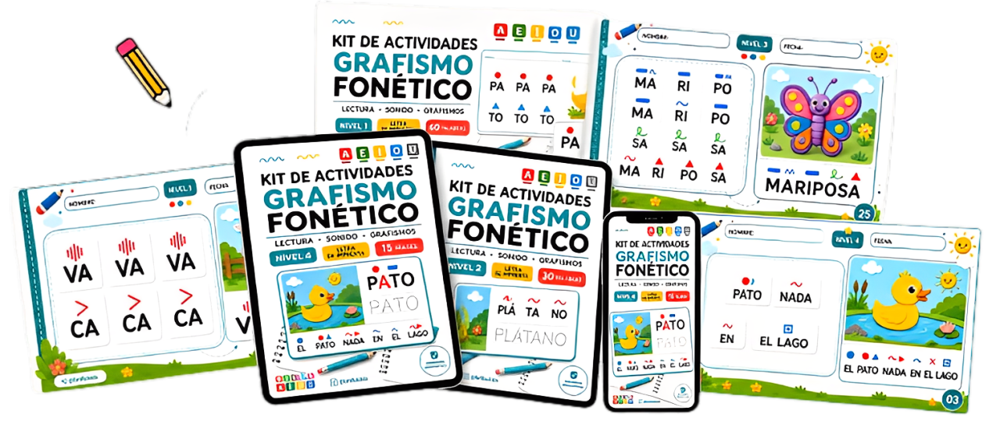
Descubre la técnica americana que enseña a los niños a leer hasta 5 veces más rápido, ¡sin presión!
Con solo 10 minutos al día.
Tu hijo o alumno va a aprender a leer hasta 5 veces más rápido
de forma divertida, simple y eficaz.
Muchos padres creen que
cada niño tiene su propio tiempo para leer.
Hasta que…

Las tareas de lectura se convierten en un sufrimiento.
Las notas bajan.
Se siente "menos inteligente" que sus compañeros.
Las tareas de lectura se convierten en un sufrimiento.
Llora a la hora de hacer la lección.
Las notas bajan.
Se siente "menos inteligente" que sus compañeros.
Y lo peor: empieza a creer que no es capaz,
sin entender por qué.

Entiende qué retrasa la
lectura de tu hijo...
La falta de estimulación fonética en el momento adecuado puede hacer que el proceso de alfabetización sea más lento, frustrante y confuso, tanto para el niño como para ti.
Pero tranquila, no es tu culpa... Nadie te enseñó cómo despertar la lectura de forma simple, divertida y en el momento justo.
Por eso necesitas el Kit...
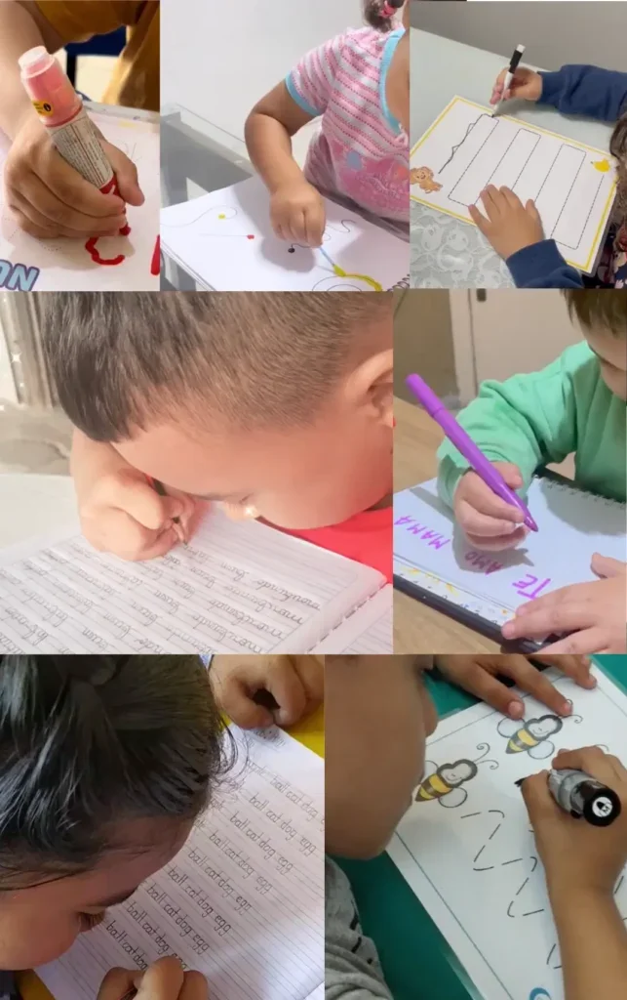
Cada actividad del Kit de Grafismo Fonético fue cuidadosamente creada para:
- Desarrollar la coordinación motora fina
- Estimular la creatividad y la atención del niño
- Fortalecer las conexiones cerebrales que facilitan la lectura
- Despertar el interés por las palabras y los sonidos
- ¡Hacer la alfabetización liviana, divertida y efectiva!
Todo esto con solo unos minutos al día, desde casa, al ritmo natural de tu hijo.
¿Por qué funcionan las actividades de
Grafismo Fonético?

Antes de aprender a leer, el cerebro del niño necesita reconocer patrones, sonidos y movimientos.
Las actividades de grafismo fonético desarrollan la conciencia fonológica y visual, habilidades esenciales para que el niño reconozca sílabas, sonidos y estructuras de las palabras de forma natural.
Al trazar líneas, curvas y patrones fonéticos, fortalece las conexiones cerebrales responsables de la lectura, aceleerando la alfabetización de forma divertida y sin presión.

Y en pocos días vas a notar la diferencia en la lectura de tu hijo:
- Reconocerá sílabas y sonidos con más facilidad
- Se sentirá más seguro al intentar leer palabras nuevas
- Mostrará más interés por libros e historias
- Aprenderá a su ritmo, sin frustración ni comparación
- Y lo mejor: empezará a disfrutar el momento de lectura en casa
Con el Kit de Grafismo Fonético, tu hijo desarrolla el cerebro
para aprender a leer con facilidad, a su ritmo y con
resultados visibles en pocos días.
Comienza hoy el camino del aprendizaje
de tu hijo
Lo Que Tu Hijo
Va a Aprender

Reconocimiento de Sonidos y Letras
Cada sonido es asociado a una letra, fortaleciendo las conexiones cerebrales de forma sólida y duradera.
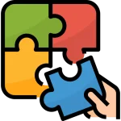
Formación de Palabras
Actividades dinámicas que convierten la construcción de palabras en una experiencia divertida e intuitiva.
Comprensión y Lectura Fluida
Ejercicios prácticos que mejoran la comprensión de lo leído, ayudando a tu hijo a ganar fluidez y confianza.
Guía Paso a Paso con Ilustraciones
Instrucciones visuales y detalladas para que cada etapa del aprendizaje sea clara y tranquila, sin complicaciones.
Mira lo fácil que es enseñar
a tu hijo a
leer con el Grafismo Fonético...
Presiona play👇Practicando solo 10 minutos al día,
Niños en etapa de alfabetización:
Ideal para niños que dan sus primeros pasos en la lectura, con un enfoque estructurado e intuitivo que desarrolla una base sólida y segura.
Padres y educadores que buscan alternativas a los métodos tradicionales:
Si buscas una enseñanza más personalizada que respete el ritmo de cada niño, este método es una excelente opción.
Niños con dificultades en la lectura:
Para niños que enfrentan desafíos, el Grafismo Fonético ofrece apoyo extra con actividades lúdicas que facilitan la comprensión.
Escuelas e instituciones que valoran la innovación:
Perfecto para escuelas que buscan métodos comprobados, con un enfoque moderno que genera resultados reales y duraderos.
Mira lo que Padres y educadores
dicen sobre el Kit de Grafismo FonéticoAndrés Valenzuela
Mis pequeños están teniendo una evolución significativa gracias al Grafismo Fonético. Quien compre otro producto, es porque no aprecia su dinero.
Ana Martínez
Mi hija empezó a formar palabras en solo dos semanas usando el kit. ¡Es increíble cómo evolucionó en tan poco tiempo!
Marisa Rodríguez
Créanme, esta es la mejor compra que van a hacer este año. ¡No pierdan la oportunidad!
Camila Herrera
¡Es increíble cómo algo tan simple puede marcar tanta diferencia! Estoy muy satisfecha con mi compra 👌
Bruno Salinas
El método es fácil de seguir, incluso para nosotros los padres sin experiencia en enseñanza. ¡Es muy gratificante ver a nuestro hijo leyendo sus primeras palabras!
Mira todo lo que recibirás en el kit de actividades


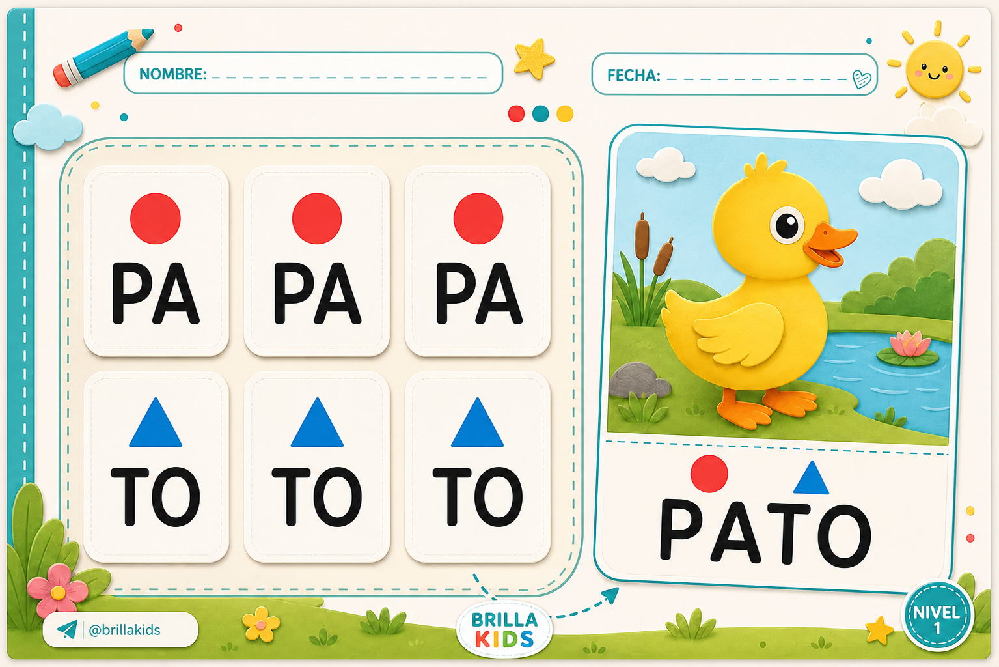

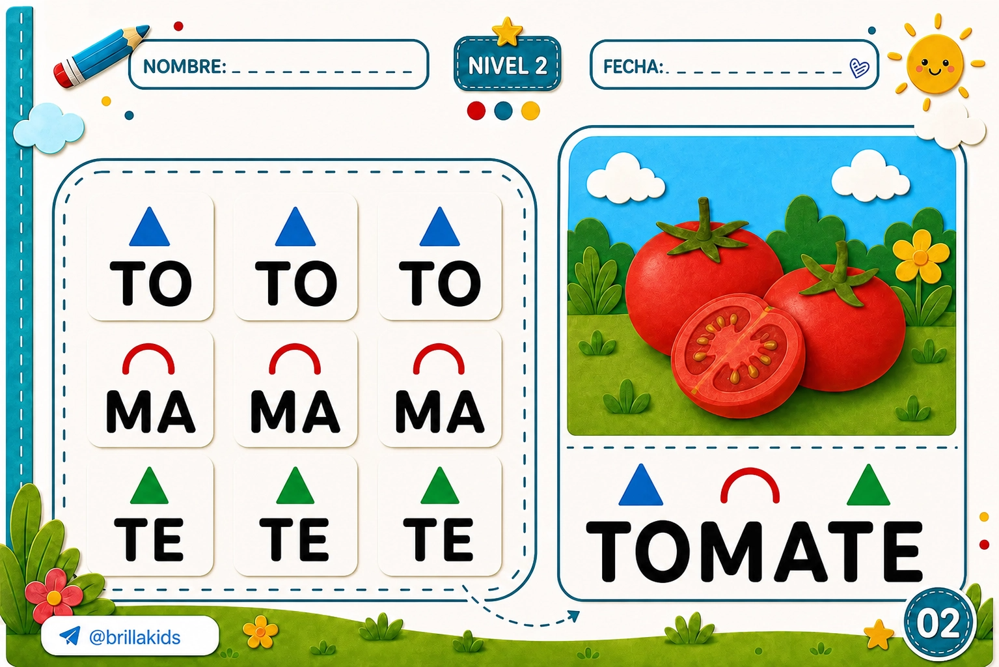

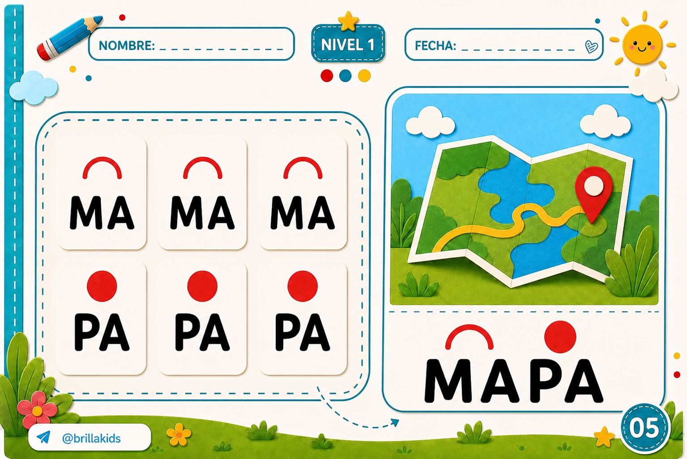


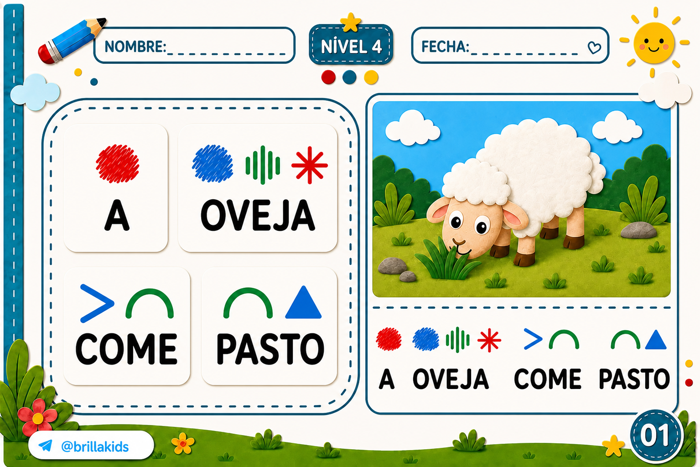
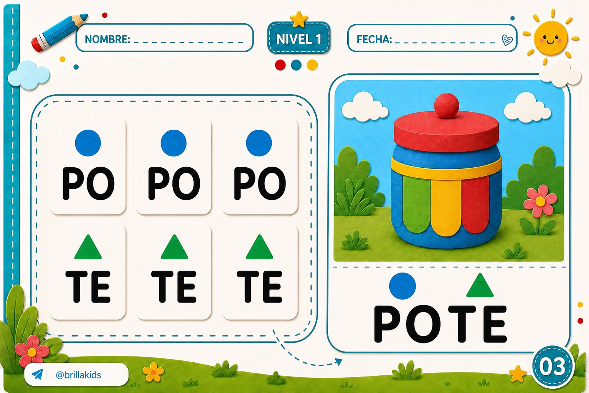
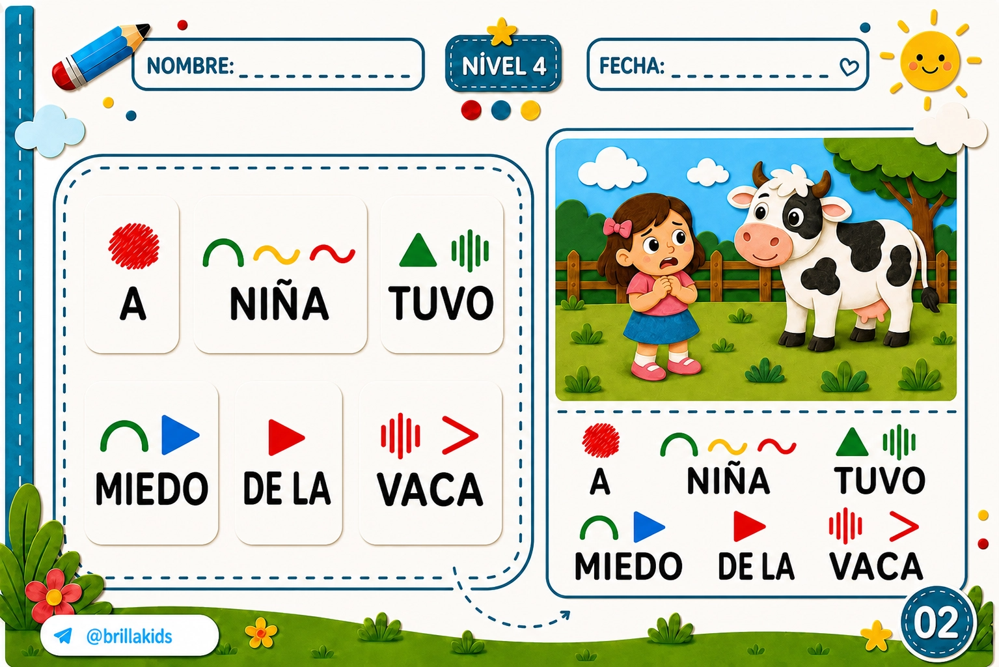
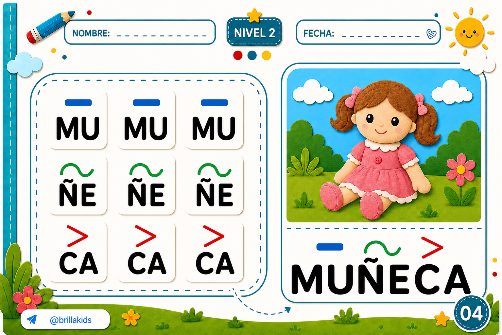
+ de 130 Actividades de Grafismo Fonético
¡Muy simple de empezar a usar!
LLEGA A TU EMAIL
Después de la compra recibes en tu email el acceso a la plataforma con los archivos en formato PDF.

TÚ LO IMPRIMES
Puedes imprimir cuando quieras, ya que el acceso es DE POR VIDA y las veces que desees.

LOS PEQUEÑOS LO AMAN
¡Tenemos una excelente noticia para ti, MANOS A LA OBRA! Es importante que siempre acompañes a tu pequeño en las actividades.
Y aún no terminó...
¡Garantizando tu acceso hoy llevas 6 SÚPER BONOS! 🎁

Cuaderno Alfabeto con Imágenes
Presenta cada letra del alfabeto con imágenes asociadas, ayudando a los niños a familiarizarse con las letras de forma visual y divertida.
De R$ 37
HOY: GRATIS
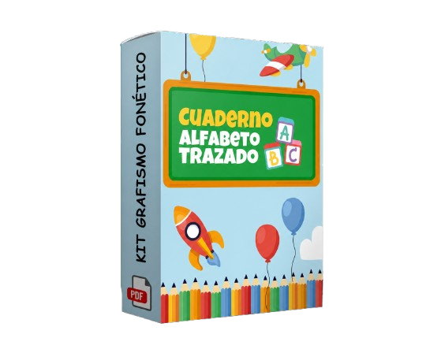
Cuaderno Rompecabezas del Alfabeto
Actividades de rompecabezas con letras del alfabeto para una fijación divertida e interactiva.
De R$ 47
HOY: GRATIS
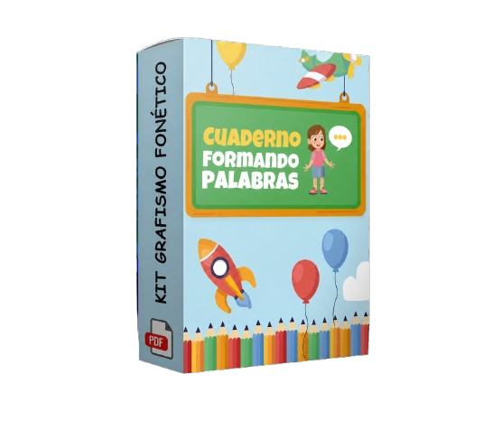
Cuaderno Formando Palabras
Ejercicios de formación de palabras que incentivan la lectura y escritura, ayudando a construir vocabulario.
De R$ 57
HOY: GRATIS
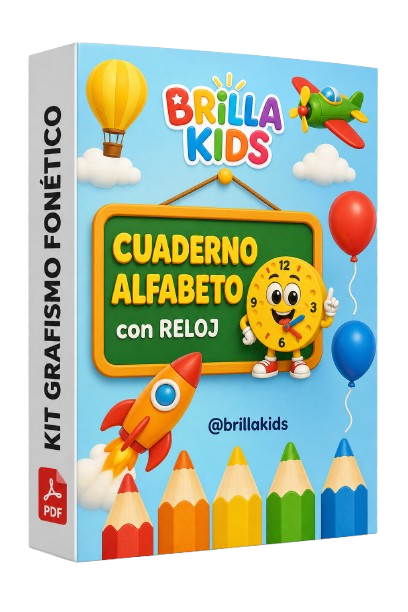
Cuaderno Alfabeto con Reloj
Cuaderno interactivo que enseña las letras del alfabeto junto a un reloj, promoviendo la lectura y nociones de tiempo de forma lúdica.
De R$ 39
HOY: GRATIS
Cuaderno Alfabeto Trazado
Cuaderno con letras del alfabeto trazadas, perfecto para que los niños practiquen la escritura.
De R$ 37
HOY: GRATIS
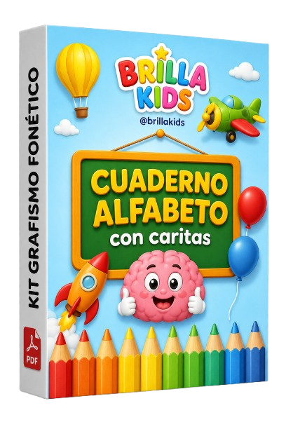
Cuaderno Alfabeto con Caritas
Cuaderno con letras del alfabeto y expresiones divertidas para hacer el aprendizaje más alegre.
De R$ 37
HOY: GRATIS
Recapitulando todo lo que recibirás junto con el
Kit Actividades Grafismo Fonético
Actividades Grafismo Fonético Nivel 1, 2 y 3 De $197
Bono 01: Cuaderno Alfabeto con Imágenes De $37
Bono 02: Caderno Quebra-Cabeça Alfabeto De $47
Bono 03: Cuaderno Formando Palabras De $57
Bono 04: Cuaderno Alfabeto con Reloj De $39
Bono 05: Cuaderno Alfabeto Trazado De $27
Bono 06: Cuaderno Alfabeto con Caritas De $49
Soporte Profesional
Garantía Incondicional
En total todo debería costar $453,00
Pero hoy tendrás acceso completo por solo
US$ 7,97
ACCESO DE POR VIDA | ACCESO INMEDIATO
¡QUIERO EL KIT COMPLETO!SEGURA
GARANTIZADA
PROTEGIDA

Garantía incondicional de 7 días
Tienes 7 días para probar el Kit de Grafismo Fonético. Si por cualquier motivo no estás satisfecho(a), solo envía un email y te devolvemos el 100% de tu dinero, sin burocracia y sin preguntas.
Pago 100% Seguro
Ambiente encriptado y protegido. Tus datos personales y financieros están seguros.
Producto con Derechos de Autor Protegidos
Obra registrada y protegida por derechos de autor conforme a la legislación vigente.
+5.000
Familias atendidas
Vitalicio
Sin mensualidades
Soporte
Humanizado
Digital
Acceso inmediato